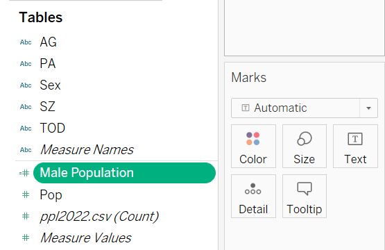
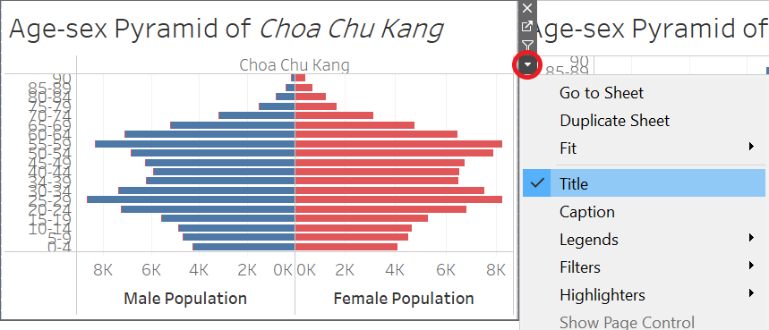

Take-home Exercise 1
1 The Task
In this take-home exercise 1, we will use the Age-sex pyramid through Tableau Desktop to visualise demographic structure of population of Singapore. And we will display nine selected planning areas on a single view by using trellis display.
2 The Visualising Tool
Tableau Desktop
3 Step-by-step Guide
Procedure#### Step 1 Check the csv and xls file named ‘Singapore Residents by Planning Area / Subzone, Age Group, Sex and Type of Dwelling, June 2022’ from Singstat. |
Screenshot |
|
Step 2For files with the same content but differed forms, we should choose csv file for its smaller size and friendly readability to Tableau. |
  |
|
Step 3Because we use the data from the same year, so we don’t need the column named Time, for which all the rows are 2022. Therefore we can delete this column to get a cleaner data table. Then we save the file and name it ppl2022.csv. |
||
Step 4Import the data into Tableau Desktop by opening the csv file just downloaded. |
||
Step 5In the Data Source page, see that the data contains 6 fields: PA, SZ, AG, Sex, TOD, POP and Time and 100928 rows. Through checking the data type of the fields from the detail session, noted that data type of the columns named PA, SZ, AG, Sex and TOD are string, and column named Pop are Number (whole). |
 |
|
Step 6Checking the Notes file for the data, we see the explanations of each column:
|
 |
|
Step 7Before we start analysing, we can check the raw data information by clicking the black triangle on the top right of the column and clicking Describe… For example, as shown in right, the column PA which means planning area has 55 items and no Null values. We can use the same method to check other columns we need, AG - age and Pop - population, and find no Null values in these columns. |
  |
|
Step 8To build a Age-sex pyramid chart, we need bins of the age. Information of the age column shows that the original data already has 19 bins of age, and the length of each bin is 4, which is quite standard for an Age-sex pyramid chart. |
AG | | Role: Discrete Dimension | | Type: Database column | | Remote column: [ppl2022.csv].[AG] | | Remote type: ANSI/MBCS character string | Contains NULL: No | | Locale: United States(English) | | Sort flags: Case-sensitive | | Column width: 11 | | Status: Valid | | Domain (19 members) | | 0_to_4 | | 10_to_14 | | 15_to_19 | | 20_to_24 | | 25_to_29 | | 30_to_34 | | 35_to_39 | | 40_to_44 | | 45_to_49 | | 5_to_9 | | 50_to_54 | | 55_to_59 | | 60_to_64 | | 65_to_69 | | 70_to_74 | | 75_to_79 | | 80_to_84 | | 85_to_89 | | 90_and_over | | |
Step 9Then in the new worksheet, we drag the AG to the Row shelf. |
||
Step 10Select Analysis > Create a Calculated Field, and enter Male Population. Then in the pane space, enter formula as shown in right to extract Male population from the Sex. |
||
Step 11As shown on the right, we have Male population now. |
 | |
Step 12We use the same way to extract female population as shown on the right. |
||
Step 13Drag the Male Population and Female Population to the Column shelf. |
||
Step 14Click the triangle of the PA in the Table shelf, open the filter option and select 1 planning area according to our task requirements. |
 |
|
Step 15Drag the Sex to the color to embody different colors to the bar charts for each gender. |
 |
|
Step 16According to the code of Age-sex pyramid, Female chart ought to be on the right side. Therefore, we can change the position of Female and Male axis by changing the location of Male Population and Female Population in the column shelf. |
 |
|
Step 17Noted that the Female population has at least 19 null values, we can check the data by navigating to Analysis > View Data… Noted that because of the conditional statement we used to extract male population and female population, there will be Null values if the object does not fit the condition. We click on the button and choose the ‘Show data at default position’. So that all null values will be replaced by 0. |
   |
|
Step 18 The next step to create the age-sex pyramid graph is to Right click the axis of Male population > Edit Axis > Reversed. |
||
Step 19 Then we change the aesthetics of the chart. First we change the color of the bar chart by clicking color > Edit color under the Mark. |
 |
|
Step 20 Lastly, we should sort the Y-axis as descending order. Right click beside the y axis > descending. |
 |
|
Step 21 Double click the Title and change it to Ang Mo Kio Age-sex Pyramid. |
 |
|
Step 22 We can remove the y label to make a tidier chart by right-clicking the y label > Hide Field Labels for Rows… |
||
Step 22 With the same steps, we create other 8 age-sex pyramid graphs for other planning areas and rename each worksheet. |
||
Step 23 Then we drag all the age-sex pyramid into a new created Dashboard named A-S Pyramid, and adjust the size of the dashboard to 1800 px*1200 px. |
 |
|
Step Change the scale name of the y axis |
||
Step We also need to edit the Aliases of AG-age because the original aliases are very tedious. For example, we can change 0_to_4 to 0-4 and so on. |
 |
|
Step Right-click the x label PA > Hide Field Labels for Rows… to remove the label for a tidier chart. |
||
Step Then we can drag the PA to the column shelf and the name of the planning area will appear on the top of the chart, so that we don’t need the title of the chart appear on the dashboard. |
 |
|
Step Now we can hide the title in the dashboard with area name on the top of each plot by clicking the triangle of on the right of each sub plot > uncheck the Title. |
 |
4 The Dashboard
5 Discussion
We personally chose 9 planning areas in Singapore and created their Age-sex pyamid and excluded those where population is 0, for example, Changi Bay.

Taking a look at the real map, Changi Bay area is not a name of a continent, but a real bay, where there is no residency as shown in the screenshot below.

The age-sex pyramid breaks down a location’s population into male and female genders and age ranges. The layout of our population pyramid shows male population on the left side and female population on the right side. There are mainly three basic types of population pyramids show how different trends are displayed.
- Rapid Growth
A population pyramid that is very wide at the younger ages, characteristic of countries with a high birth rate and perhaps low life expectancy. The population is said to be fast-growing, and the size of each birth cohort increases each year.
- Slow Growth
A pyramid can be described as stationary if the percentages of population (age and sex) remain approximately constant over time. In a stationary population, the numbers of births and death roughly balance one another.
- Negative Growth
A population pyramid that is narrowed at the bottom. The population is generally older on average, as the country has long life expectancy, a low death rate, but also a low birth rate. This may suggest that in future there may be a high dependency ratio due to reducing numbers at working ages. This is a typical pattern for a very developed country, with a high level of education, easy access to and incentive to use birth control, good health care, and few negative environmental factors.
5.1 Type I
5.1.1 Population structure of Ang Mo Kio

It is obvious that population structure in Ang Mo Kio area belongs to Negative Growth with a kite shape, which means low fertility rate in this area.
The average age in this area is about 60. As shown in the age-sex pyramid chart, population with the most size is among 60-64 years, and this area has huge number of elderly and middle-aged adults, as ages get smaller or larger, population generally gets smaller.
In addition, the population of male and female is about equal. There are usually more females than males in the older age ranges since women have a greater life expectancy.
The chart has a relatively small base and skinny top, which means a low dependency rate in this area.
5.1.2 Population structure of Queenstown

Similar to population structure in Ang Mo Kio, the one in Queenstown area also belongs to Negative Growth, but the total population is less than that in Ang Mo Kio area.
The average age in this area is around 45 years old, which is yonger than that in Ang Mo Kio area.
5.1.3 Population structure of Jurong West

Also noted as Negative Growth, population in this area has a huge number of middle aged citizens.
The border of this chart is more smooth, which may relates to its large amount of total population.
The average age in this area is around 40 years old.
5.1.4 Population structure of Toa Payoh

With small base and large size in the middle, population structure in this area is also Negative Growth.
Number of population between 30-34 year old is especially large in this area. It seems like many young adults like to live in this area.
The average age in this area is around 30 years old.
5.2 Type II
Type II structure has a notch in the middle area.
5.2.1 Population structure of Choa Chu Kang
The largest population belongs to 50-64 years old and 20-34 years old, seemingly younger adults like to live in this area.
However, the number of population under 20 years old and above 70 years old takes the smallest part of the total population. Therefore, this population structure also belongs to Negative Growth. And the average age in this area.
The average age in this area is around 40 years old.
5.2.2 Population structure of Yishun
Negative Growth structure with adults take the most part of the population and the small base.
Low dependency rate due to small number of children and elderly.
The average age is around 30 years old.
5.2.3 Population structure of Pasir Ris
Negative Growth structure with adults take the most part of the population and the small base.
Especially high portions of population between 55-64 years old and 20-29 years old.
Low dependency rate due to small number of children and elderly.
The average age is around 44 years old.
5.2.3 Population structure of Novena
Negative Growth structure with adults take the most part of the population and the small base.
The notch in this area locates in age group 20-24, and male kids are more than female kids.
Low dependency rate due to small number of children and elderly.
The average age is around 34 years old.
5.3 Type III
This type of population structure is based on a few population compared to other areas.
5.3.1 Population structure of Changi

Noted a quite asymmetrical shape between left and right parts due to the small total number of the population. The Changi area is around the Changi Airport so that the residency is quite few compared to other areas.
Generally this area has low fertility rate with a Negative Growth structure because its portions of kids and elderly are small compared to that of other age groups.
The average age in this area is around 44 years old.
6 Conclusion
| Planning Area | Population Structure | Average age |
|---|---|---|
| Ang Mo Kio | Negative Growth - kite shape | 60 |
| Queenstown | Negative Growth - kite shape | 45 |
| Jurong West | Negative Growth - kite shape | 40 |
| Toa Payoh | Negative Growth | 30 |
| Choa Chu Kang | Negative Growth - kite shape with a notch | 40 |
| Yishun | Negative Growth - kite shape with a notch | 30 |
| Pasir Ris | Negative Growth - kite shape with a notch | 44 |
| Novea | Negative Growth - kite shape with a notch | 34 |
| Changi | Negative Growth | 44 |